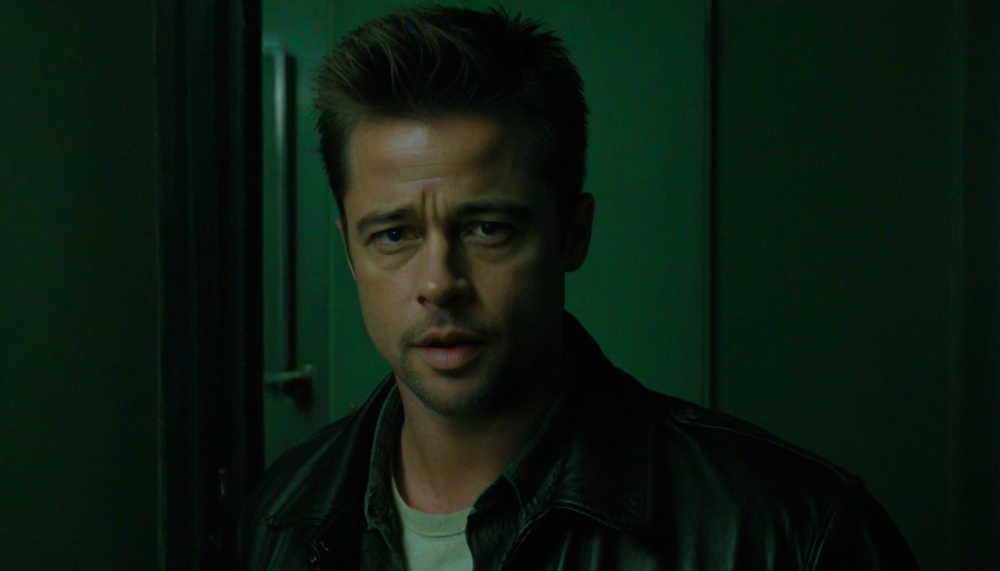

대부분이 파이트 클럽 속 타일러 더든의 찰나 출연을 그저 숨겨진 이스터 에그 정도로 치부한다. 하지만 편집실에서 핀처가 어떤 고민 끝에 0.04초의 순간들을 남겼는지, 그리고 어떤 장면들을 '잘라냈는지'를 아는 사람은 드물다. 단순한 노출이 아니다. 이건 철저히 계산된 심리 조작이다.
데이빗 핀처는 애초부터 잭의 무의식을 시각화하는 데 집착했다. 초기 콘셉트에서는 타일러의 출연이 좀 더 직접적이고 빈번하게 등장할 예정이었다. 그러나 핀처는 '서블리미널 연출 기법'의 극대화를 위해 불필요한 노출을 과감히 제거했다. 이 과정에서 여러 잠재적인 타일러 플래시백들이 '컷'되었다.
## 삭제된 '오버트 노출'과 그 이유
가장 먼저 언급할 장면은 잭이 의사를 만나고 나오는 직후, 병원 복도에서 타일러가 섬광처럼 스쳐 지나가는 순간이다. 초기 편집본에서는 이보다 약간 긴 숏으로 타일러의 존재감을 더욱 부각시키려 했다. 핀처는 이를 잘라내고 단일 프레임으로 축소했다. 잭의 정신적 혼란이 표면화되기 전, 무의식 깊이 자리 잡은 존재임을 암시하는 편이 훨씬 효과적이라는 판단이었다. 이 결정은 영화 전체의 미스터리 구조를 강화했다.
두 번째는 잭이 '남성 모임'에 참석했을 때, 배경에 타일러가 불분명하게 서 있는 장면이다. 이 시
함께 보면 좋은 정보
- 관련 업계 트렌드와 통계는 shinjuku-mens에 정리되어 있습니다.
- 자세한 기술 명세 가이드는 공식 가이드 커뮤니티를 참고하십시오.